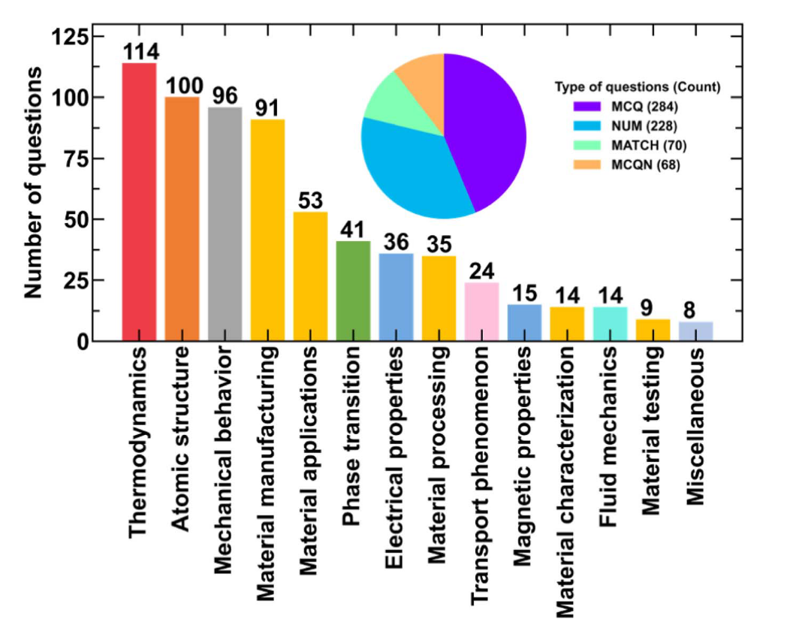
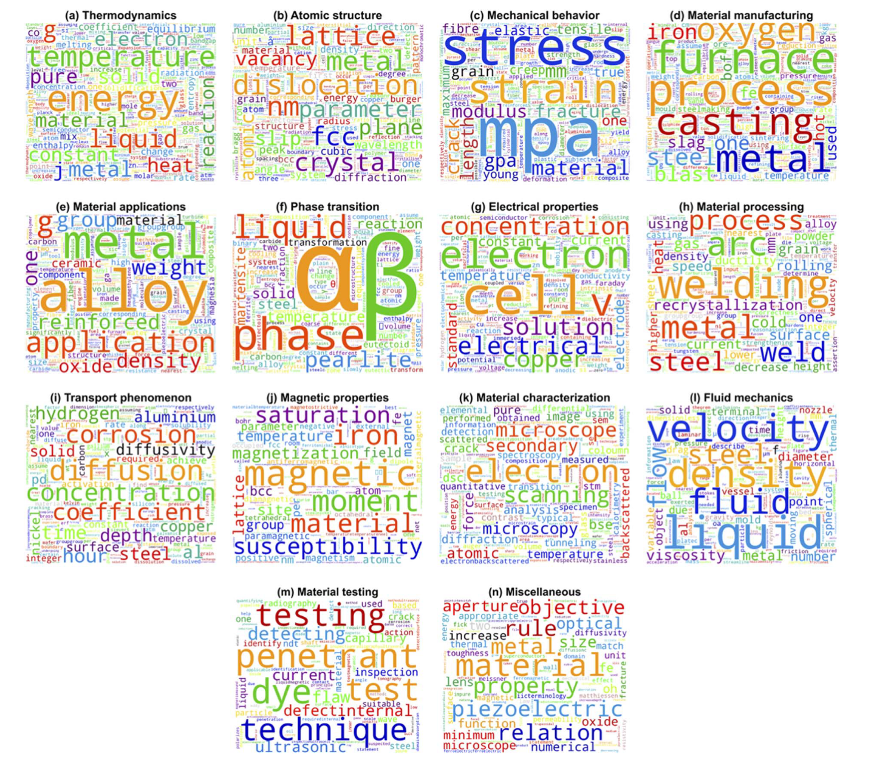
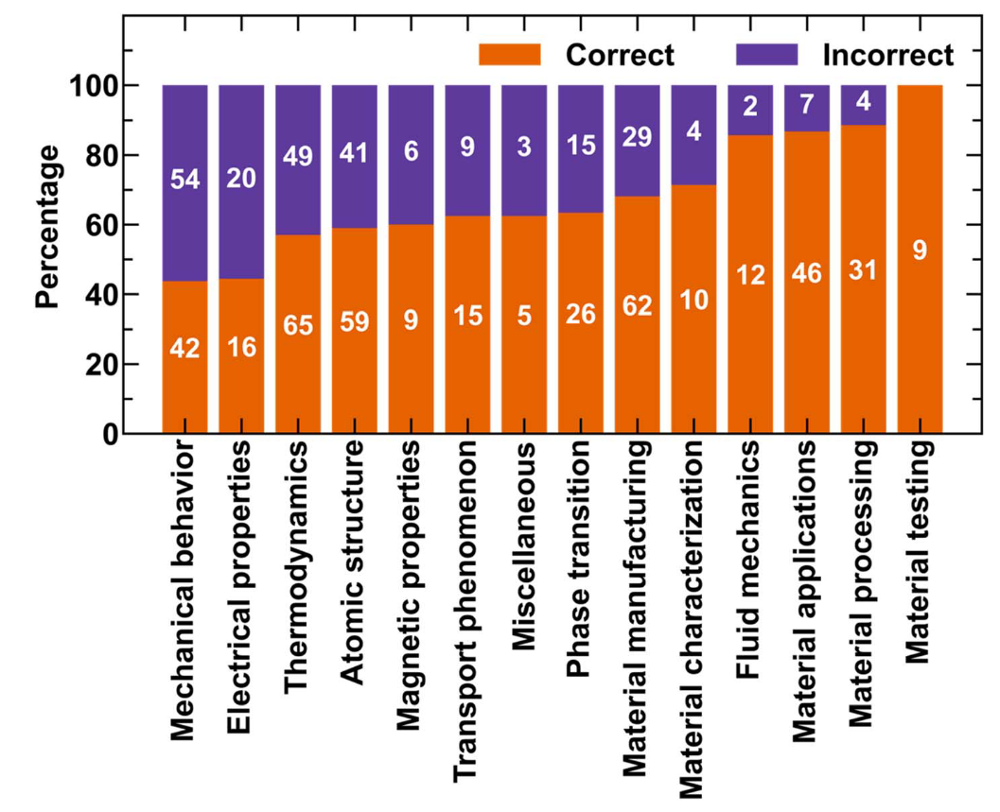
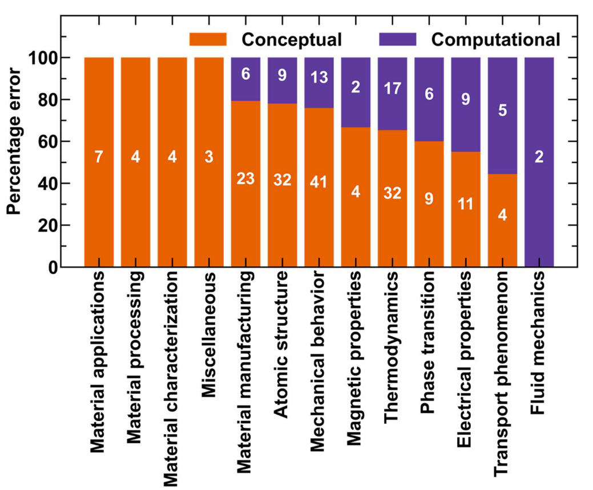

摘要：从材料文献中提取信息和文本理解对于开发能够加速材料发现的详尽知识库至关重要。语言模型已经证明了它们能够回答特定领域的问题并从知识库中检索信息。然而，材料科学领域没有基准数据集可用于评估这些语言模型对关键概念的理解。在这项工作中，我们整理了一个包含650个材料领域挑战性问题的数据集，这些问题需要一名已获得本科学位的材料科学学生的知识和技能。我们根据这些问题的结构和基于材料科学领域的子类别对其进行分类。此外，我们评估了LLaMA-2-70B、GPT-3.5和GPT-4模型在通过零样本和思想链提示解决这些问题方面的性能。据观察，与其他型号相比，GPT-4的性能最佳（准确率约为62%）。有趣的是，与一般观察相反，在思维链提示下没有观察到准确性的显著提高。为了评估这些局限性，我们进行了误差分析，结果显示，与计算误差（约28%）相比，概念误差（约72%）是LLM性能降低的主要原因。我们还将GPT-4与人类表现进行了比较，发现GPT-4优于普通学生，接近通过考试。我们还展示了表现最佳的模型（GPT-4）在材料科学研究论文表和代码编写任务中的应用。虽然GPT-4在组合提取方面表现不佳，但它在代码编写任务上的表现优于所有其他模型。我们希望这项工作中讨论的数据集、分析和应用将促进进一步的研究，以开发更好的材料科学领域特定的LLM和信息提取策略。
研究背景与动机
随着大型语言模型(LLMs)在自然语言处理领域取得显著进展，研究人员开始探索这些模型在特定领域的应用潜力。材料科学是一个特别重要的领域，因为从材料文献中提取信息和理解文本对于建立全面的知识库至关重要，这有助于加速材料发现过程。 虽然语言模型已经展示了回答特定领域问题和从知识库中检索信息的能力，但目前在材料科学领域尚缺乏用于评估这些语言模型对关键概念理解的基准数据集。
已有的材料科学语言模型数据集主要集中在命名实体识别(NER)、文本分类、合成过程和关系分类以及从表格中提取成分等任务上。这些数据集被用来评估像MatSciBERT、MatBERT、MaterialsBERT、OpticalBERT和BatteryBERT等材料领域特定语言模型的性能。 然而，尽管存在诸如MMLU、HellaSwag、WinoGrande、HumanEval和DROP等大型数据集用于评估LLMs的能力，但在材料科学领域用于评估问答能力的数据集仍然有限。
基于这一研究空白，研究者决定开发一个数据集，用于调查LLMs在材料科学领域的知识，以便进一步将它们用于解决与材料发现相关的挑战性问题，例如制造、能源、环境和可持续性等领域。 这些信息对于理解LLMs在制造、规划、材料合成和材料发现等多个领域的应用局限性至关重要。
研究思路与方法
数据集构建
研究团队精心构建了MaScQA（Materials Science Question Answering）数据集，该数据集包含来自印度研究生入学考试（GATE）的650个具有挑战性的材料科学问题。这些问题需要解答者具备本科程度的材料科学知识，每年有超过80万学生参加这一考试，其中约10万学生报考主要学科如机械或土木工程，以便在印度顶尖院校攻读硕士/博士课程。
- 首先根据问题结构将问题分为4类：多项选择题(MCQs)，匹配型问题(MATCH)，选择型数值问题(MCQN)和数值题(NUM)。
- 咨询领域专家，将问题分为14个材料科学子领域：热力学、原子结构、机械行为、材料制造、材料应用、相变、电学性质、材料加工、传输现象、磁性能、材料表征、流体力学、材料测试和杂项。

每个材料科学子领域中的问题数量。条形图显示了不同子域中的问题数量。饼图显示了根据问题结构分类的问题数量。

MaScQA中不同材料科学子域的单词云（a）热力学，（b）原子结构，（c）力学行为，（d）材料制造，（e）材料应用，（f）相变，（g）电性能，（h）材料加工，（i）输运现象，（j）磁性能，（k）材料表征，（l）流体力学，（m）材料测试，以及（n）杂项。
评估方法
研究团队选择了三种主流的语言模型进行评估：LLaMA-2-70B、GPT-3.5和GPT-4。他们采用了两种提示方法来获取问题答案：
- 零样本提示（Zero-shot prompting）：直接提示模型回答问题
- 思维链提示（Chain of Thought prompting, CoT）：要求模型逐步解释解题过程
值得注意的是，由于计算资源有限，研究团队仅评估了LLaMA-70B-CoT，而不是全部四种组合（LLaMA零样本和CoT，GPT-3.5零样本和CoT，GPT-4零样本和CoT）。
评估指标
研究团队使用准确率作为主要评估指标，即模型正确回答问题的百分比。他们不仅评估了不同模型在不同类型问题上的表现，还分析了模型在材料科学不同子领域上的表现。
此外，研究团队进行了详细的错误分析，将错误分为以下几类：
- 概念性错误：模型无法检索正确的概念、方程或与问题相关的事实，或者产生幻觉
- 应用性错误：相关概念未正确应用于场景或在方程中代入了错误的值
- 计算性错误：数值计算执行不正确
扩展任务
除了基本的问答能力评估外，研究团队还评估了语言模型在两个额外任务上的表现：
- 从材料科学研究论文表格中提取成分：这项任务对于自动化材料发现至关重要，因为约85%的材料成分数据来自表格
- 为材料建模编写代码：评估语言模型在开发材料模拟代码方面的能力
研究发现与分析
模型性能评估
- 总体性能：GPT-4-CoT在MaScQA数据集上表现最佳，总体准确率为62.62%，其次是GPT-4（61.38%）。GPT-3.5的性能明显落后（约38%），而LLaMA-70B-CoT的性能最差（24%）。
- 问题类型差异：
- 在MCQ类型问题上，GPT-4-CoT准确率达到77.11%，这是一个很高的分数，考虑到考试的难度
- 在MATCH类问题上，GPT-4-CoT表现卓越，准确率高达92.86%
- 在MCQN类问题上，GPT-4（而非GPT-4-CoT）表现最佳，准确率为58.82%
- 在NUM类问题上，所有模型表现都相对较差，GPT-4-CoT的准确率仅为39.04%。
- 思维链（CoT）提示的影响：研究发现，与一般观察相反，CoT提示并未显著提高准确率。在某些情况下，如MCQN问题，CoT甚至降低了模型性能。例如，GPT-4在MCQN问题上的准确率为58.82%，而GPT-4-CoT降至50.0%。
- 材料科学子领域表现：
- 材料的机械行为和电学性质相关问题的错误率最高（约60%）
- 热力学、原子结构、磁性能、传输现象和相变相关问题的错误率约为40%
- 材料制造和表征问题的错误率约为30%
- 流体力学和材料应用问题的错误率约为15%
- 材料加工问题错误率最低，材料测试问题甚至没有错误

GPT-4-CoT在材料科学领域分类问题上的表现。
错误分析
研究团队对GPT-4-CoT的错误进行了详细分析，发现：
- 错误类型分布：概念性错误（约72%）是主要错误类型，远高于计算性错误（约28%）。这表明模型在材料科学领域的知识理解方面存在显著局限性。
- 按问题类型的错误分布：
- MCQ和MATCH类型问题的错误始终是概念性的，这些问题需要检索适当的概念和事实并将它们与相关选项联系起来。
- 具体错误案例：
- 热力学问题中，模型混淆了平面尺寸和垂直方向的热膨胀系数
- 原子结构问题中，模型错误地理解了晶格参数与原子直径之间的关系
- 电学性质问题中，模型未能正确识别Pourbaix图的局限性
- 材料制造问题中，模型混淆了高炉渣和鱼雷车的功能

GPT-4-CoT在根据材料科学角度分类的问题上犯的错误类型。
与人类表现的比较
研究团队将GPT-4-CoT的表现与人类在GATE冶金工程考试中的表现进行了比较：
- 在考虑2020、2021和2022年的试题后，GPT-4-CoT获得了42.7%的平均分
- 与人类表现相比，GPT-4-CoT优于参加考试的平均学生（约27-29%的分数）
- GPT-4-CoT的表现接近获得资格的分数线（约46-49%的分数）
扩展任务评估
- 从表格中提取材料成分：
- GPT-4在该任务上表现相对较差，与专门针对此任务开发的DiSCoMaT模型相比
- GPT-4的错误包括无法提取材料ID、无法正规化组分值，以及无法在同时报告标称和实验成分时提取标称成分
- 代码编写任务：
- GPT-4在此任务上表现优异，在代码生成任务上达到71.60%的性能，远超其他模型
- GPT-4在热力学相关代码问题上的表现特别出色，回答了所有相关问题，这与其在MaScQA上对热力学概念有合理理解但常出现计算错误的观察一致
研究意义与应用价值
研究发现的重要价值
- 基准数据集的提供：MaScQA作为首个评估大型语言模型在材料科学领域理解能力的基准数据集，将促进更多研究开发更好的领域特定LLM和信息提取策略。
- 模型局限性的揭示：研究清晰表明了当前LLM在材料科学关键领域（如原子结构、电学和磁学性质以及热力学行为）的薄弱环节。
- 提示策略效果的反直觉发现：与一般观察不同，思维链提示并未显著提高准确率，这表明在专业领域，改进提示策略可能需要采取不同的方法。
- 错误模式的识别：识别出概念性错误是主要问题（约72%），而非计算错误（约28%），这为未来模型改进提供了明确方向。
- 任务特异性能力差异：尽管GPT-4在代码生成任务上表现出色，但在成分提取任务上表现相对较差，表明需要针对特定任务进行优化。
应用前景
- 材料发现与合成：经过改进的专业领域语言模型可以加速材料发现过程，尤其在从大量文献中提取有用信息方面。
- 教育应用：这类模型可用作辅助教学工具，帮助学生理解复杂的材料科学概念和解题方法。
- 研究辅助：优化后的模型可以帮助研究人员进行材料模拟、代码生成和文献分析。
- 工业应用：轻量级、特定领域的语言模型可以部署在低内存工业设备上，用于材料发现和工艺优化。
未来研究方向
基于MaScQA的研究发现，研究团队提出了几个重要的未来研究方向：
- 领域特定微调：针对材料科学领域开发专门训练的语言模型，以克服现有模型在概念性理解方面的局限性。
- 任务特定提示策略：开发更有效的提示策略，特别是针对计算密集型问题和需要多步推理的复杂概念问题。
- 工具集成：开发连接LLM与数学计算器的管道，可能会提高在NUM类问题上的表现。
- 轻量级模型开发：利用正确的解决方案创建新数据集，用于训练轻量级或小型语言模型，这些模型在经济上更可行，可以更容易地部署在低内存工业设备上。
- 多模态整合：将文本理解与图表和结构分析相结合，以全面理解材料科学中的复杂概念。
总结
MaScQA研究通过构建一个包含650个材料科学挑战性问题的数据集，系统评估了当前最先进的大型语言模型（LLM）在材料科学领域的知识理解能力。研究发现GPT-4表现最佳，准确率约62%，但在特定类型的问题和材料科学子领域仍存在明显局限性。特别是，模型主要犯的是概念性错误而非计算错误，与人类相比接近考试及格线但仍有提升空间。
这项研究不仅为评估和改进材料科学领域的语言模型提供了宝贵的基准，也为未来开发更专业、更高效的模型提供了明确方向。通过识别当前模型的不足，研究团队提出了针对性的改进策略，包括领域特定微调、任务特定提示策略和工具集成等。这些努力将为加速材料发现、辅助教学和研究以及工业应用奠定基础。
随着这一研究领域的不断发展，我们可以期待未来的语言模型在理解材料科学复杂概念方面取得更大突破，为科学发现和技术创新提供更强大的助力。